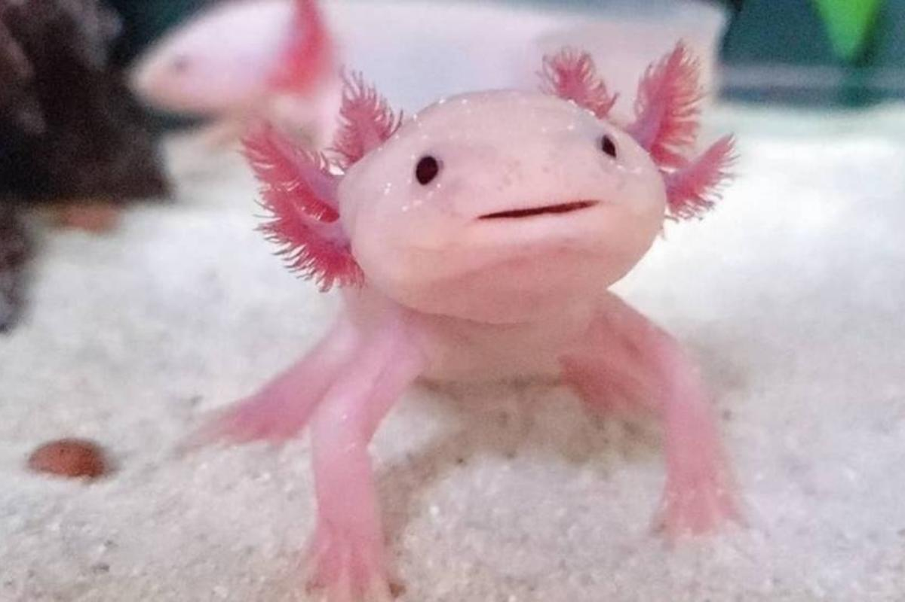

Axolotl
Generalità
Considerata una specie a rischio estremamente alto di estinzione in natura.
Le sue dimensioni variano tra i 15 e i 25 cm.
I suoi occhi non hanno palpebre, le sue dita e le sue unghie sono sottili.
Hanno tre paia di branchie che si trovano dietro la testa.
Hanno denti a malapena visibili.
Hanno quattro diverse pigmentazioni che nel momento della muta possono creare differenti varianti che sono leucistico (rosa pallido con occhi neri), albino(dorato con occhi dorati), assantico (grigio con occhi neri) e melanoide (tutto nero).
Vivono in ambienti acquatici di montagna e di collina.
Mangiano pesciolini, piccoli crostacei,molluschi e piccoli pezzi di salmone.

Curiosità
- Il suo colore narurale in realtà non è il rosino che siamo abituati a vedere, ma è marrone con fondo nero e piccoli noccioli oliva.
- E' in grado di rigenerarsi.